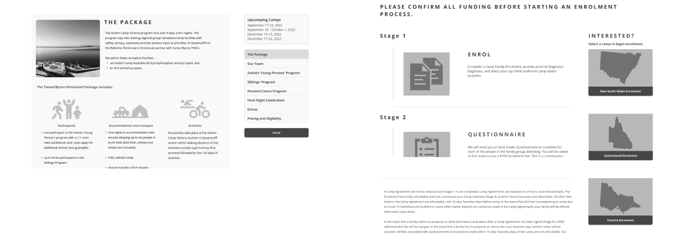

Autism Camp Australia
Responsive Design Website
Project Summary
This case study investigated the usability of the Autism Camp Australia (ACA) website. The user perspective taken was from the position of parents with children diagnosed as autistic, wishing to find information on and enroll in a camp or donate to ACA. User testing was performed and assessed, with issues identified as being navigation, readibility and lack of call to action. The home, camps, enrollment and donation pages were redesigned and a prototype created.
Project Overview
The ACA website redesign was undertaken as my group's final project for the Monash University UI/UX Bootcamp. The brief was a redesign of any modality for a cause we were passionate about. A brainstorming session followed which led to the group decision to focus on disability causes, specifically Autism Camp Australia. This decision was made on the basis that we felt the ACA website was in the most need of our support for redesigning.
Our redesign included Homepage design, the Camps pages to enrollment user flow and design, the Donations user flow and branding, and Information Architecture.
Special acknowledgement to Asrufa Azmat, Candy Ho, Nathan Markovski and Jack Sherwill as the other contributing members of my group.
My Contrabution
- Role:
- My Responsibilities
- Project Type
- Project Duration
- Design Tools
- Deliverables
Design Process Overview
In order to develop a user informed solution to the problem, the Design Thinking methodology was utilised. Developed by Hasso Plattner Institute of Design, this approach addresses complex problems by understanding human needs, with the benefit of accounting for unknown variables.
The diagram below demonstrates the five stages of the Design Thinking Methodology.
By sequentially working through these stages, I was able to develop a user centric solution to the users problem.
The Problem
ACA provides a holiday service to families of children autism. With their intension is to improve the health and wellbeing of autistic young people and their families. This occurs through the provision of accessible and supported respite-break experiences, therapies and life skills development.
However, the User Research found the current website design is difficult to navigate. There is no clear flow through information, with large amounts of text and no clear call to action for enrolments or donations.
The Solution
To solve the problem the ACA website needs the navigation bar redesigned to reduce the number of options. The user needs to be provided with a clear flow through the information about the camps, and a clear call to actions for camps enrollment and donations.
Empathise
Understanding another person’s feelings better to gain an understanding of what their needs are. This aids in discovering where the problems lie and establishing the core issues.
Understanding the User and Interface Analysis
Our first step to gain an understanding of the user of the ACA website was to create a Proto Persona. This helped us to develop a picture of the demographics for who the perceived user of the ACA website might be, and what problems they might be experiencing in using the website. This was followed by an assessment of the current website. The most likely user flows taken by the user in navigating their way to the camps information through to enrolment, and the donation process. A heuristics assessment was also conducted to identify potential areas for improvement and WCAG colour accessibility testing performed.
Heuristics assessment
The huristics assessment was conducted by taking screen shots of the potential user flow, and adding labels in miro where we perceived there were problems. These areas included appearance, content and navigation. The results of the assessment and a sample image of the homepage are demonstrated below.
- Positives
- Negatives
WCAG Testing Fails
Contrast Ratio - 4.17:1
WCAG AA: Fail
WCAG AAA: Fail
Contrast Ratio - 2.5:1
WCAG AA: Fail
WCAG AAA: Fail
Current ACA website
Testing the User Interface
Building on the initial ideas of the potential user and how they might perceive the website, a user research plan for testing the website was created. This plan was then implemented to conduct user testing, and feedback was gained on the interface from the perspective of a real user. Aspects for investigation included: navigation of the website, heuristics, and any pain points the user identified. . These parameters were also assessed against ACA’s competitors as a competitor analysis.
User Test Plan
- Objectives:
Methodology:
User testing was conducted to collect qualitative data from 5 participants. The testing was recorded via zoom and notes taken for further data analysis. Participants were provided with 3 tasks to complete and assessed for how quickly they can identify the intuitive signaling, move through the user flow, and ask for their opinion on the aesthetics and design of the website.
User Testing Analysis
The process of analysing the test data was performed on Miro. This included establishing common themes in the data, utilising an Affinity Diagram, followed by the “I Like, I Wish, What If” activity to determin actionable areas for the redesign. The results of this analysis produced the following key insights and user statements.
Key Insights
Academic Research - Survey
Not having access to parents of children with autism to interview, we consulted academic research on the topic to better understand the problems experienced by caregivers.
Survey of Parents/Carers of children with autism
The most common problems experienced by caregviers of Autism young people are:
Common thoughts and feelings
Source: Perm J. (2017); https://www.ncbi.nlm.nih.gov/pmc/articles/PMC5424584/
Competitor Analysis
Finding direct competitors for this website was challenging. Therefore, other similar charity organisations were used to determine what they were doing well on their websites and what we could learn from them.
Define
Refining who the user is, narrowing down to define the problem and interpreting the results to create our problem statement.
Defining the User, their Journey and Priority Features
The user testing provided us with a clearer picture of our user and a better understanding of their needs. A User Persona was created to reflect our refined understanding of the user's goals, needs and pain points. To better understand their emotional experience using the website a user journey map was created. This was followed by a user flow chart, to define their path from the camps pages through to enrolment, and the donation process.
User Persona
Meet Jessica, our ACA user and find out who she is, why she visited the ACA website and challenges she faced finding information.
User Journey Map
Jessica’s’s experience of moving through the website was then mapped out into a user journey map. This helped to better identify at what points throughout the journey Jessica experiences her frustrations, touch points and what leads to success.
Feature Prioritisation
Having established our user and the problem areas of the website, a Feature Prioritisation matrix was created. This was done to establish what areas of the website were most important to ACA and the user. These features became the focus of this redesign.

- Features prioritised:
How Might We?
How might we assure Jessica that our camps will provide her with temporary respite from her caregiving duties while her son feels safe, cared for and socially engaged?
Ideate
Utilising creativity and innovation in the brainstorming process, for the development of solutions to a defined problem.
Addressing User Flow, Navigation and Sketching up a solution
Our first tasks, having established our priorities, was to address the user fow and information architecture. With the new flow and information architecture we were then able to create our initial wireframe sketches commencing the process of solving the users problems.
User Flow Chart
After establishing the existing user journey through the website, and Feature Prioritisation, we set about ideating to create the new user flow. The first flow being, how the user would flow through the Camp to enrolment pages. Secondly, how the user donates to ACA. This process generated our new User Flow and User Flow Chart, with the abbreviated User Flow Chart shown here.
Information Architecture
One of the key needs for the redesign of the ACA website was the establishment of a new primary navigational structure. Card sorting was utilized as the method to establish new groupings, labels and structure. The final results were then further developed into a new sight map for the ACA website. Below demonstrates the original ACA navigation, and the new simplified site map for the prototype.
Origninal Primary Navigation
New Primary Navigation

Wireframes Ideation
To approach the problem of how we might redesign the pages in our user flow, we each set about creating wireframes. We then collaboratively identified the best solutions to be used and combined them into our low fidelity wireframes.
Prototype
Bringing ideas to life in an inexpensive scaled down version of the product, to develop a proposed solution to the problem.
Low Fidelity Wireframes and Prototype
The result of our combined ideas into one set of wireframes is shown below. Key changes from the original website included, implementing the new information architecture, reducing the amount of text on the homepage, and adding links to the camps pages from the homepage. For the camps pages we adding a side navigation bar to guide the user through all the information related to the camps, a separate page for the enrolment information, with clear call to action for the enrolment form. A clear call to action was added to the homepage for donations, and donation pages created, that were branded and internal to the website.
Low Fidelity Wireframe
Test
Going back to the user to gain insights into if the ideation and prototyping process has solved the users problems. In addition, discovering how we can make further improvements to the prototype from the users perspective.
Did we solve the problem?
Testing our design allowed us to investigate the effectiveness of our ideation phase and our solution. It allowed us to test “can the user now navigate the camps information and enroll in a camp”? And “can the user move through the donation pages to make a donation to ACA with confidence it is going to ACA with the branding now added?
User Testing
To test the effectiveness of our redesign user testing was performed. The key takeaways were, the camps pages were still lengthy, especially if the user wanted to focus on a specific piece of information. The user still felt overwhelmed with the amount of information to get through. Also, feedback received was that the links in the side navigation needed to be made to look more like links, rather than just a list. For the enrolment page, whilst logical that the information should end with the enrolment form, the user still had to go searching for it on a return visit if they didn’t remember it was at the very end of the page.
Iterate
Ideating on the new insights received in the feedback from the user on the proposed solution, and perfecting the solution by encompassing these changes into the prototype.
Refining the Solution
Even though testing showed there were still some problems with our design, we were confident that we were on the right track with our initial wireframes. To improve the prototype some iterations would be required to refine the experience for the user.
Iterations
To solve the problems we identified in the user testing we made several iterations to the wireframes. For the camps pages the information that wasn’t currently being viewed was hidden. This was to focus the user on the selected information and reduce the feeling of being overwhelmed by the amount of content. Additionally, the styling for the side navigation was added to make it clearer to the user that they were links.
On the enrolment page the same method of hiding the information not being currently viewed was used, as well as moving the links for the enrolment form to the side navigation. This was so the user was easily able to identify where the enrolment form was at any time viewing the enrolment page.
Style Guide and High Fidelity Wireframes
With our wireframes finalised a style guide was created and applied to create the High fidelity wireframes and prototyping completed. Rebranding was not part of this redesign. However, a slight change was made to the primary blue to pass WCAG accessibility.
High Fidelity Wireframes - Camps pages to Enrolment
High Fidelity Wireframes - Donations
Responsive Redesign
To complete the redesign responsive design layouts were created. These were for smaller desktop displays, tablet and mobile to indicate the layouts and breakpoints for front end development.
Front End Development
As the final part of our process a prototype was coded to demonstrate the homepage as a live website.
Conclusion
The redesign of the homepage with now three routes to the Camps pages, and improving the user flow through to the enrolment form was a success. The user could clearly navigate to the camps page for the desired state, select what information to read was important to them, and easily identify how to enroll. Also, easily identify how to donate to ACA, and give the user confidence that they were actually donating to ACA, with the addition of the ACA branding to the donation pages.
What I learned from the experience was that whilst a website needs to convey a lot of information to the user, it is important the way the information is presented. Large blocks of information can easily overwhelm the user. Breaking the information up into manageable sizes, showing the user there is a linear flow through the information, giving the option to skip parts, and showing there is an end in sight really helps with retaining the users interest . Additionally, making the call to action obvious to the user at all times makes the user more likely to take action at the first moment a decision is made.
Next Steps
Further redesign opportunities were identified during the Usability Testing stage of this Case study. However, these were beyond the capability of the timeframe to be implemented.
- These areas to be addressed in the future include:
Thank you
Thank you for taking the time to review my work. More details can be found in the comprehensive case study slide deck linked below.